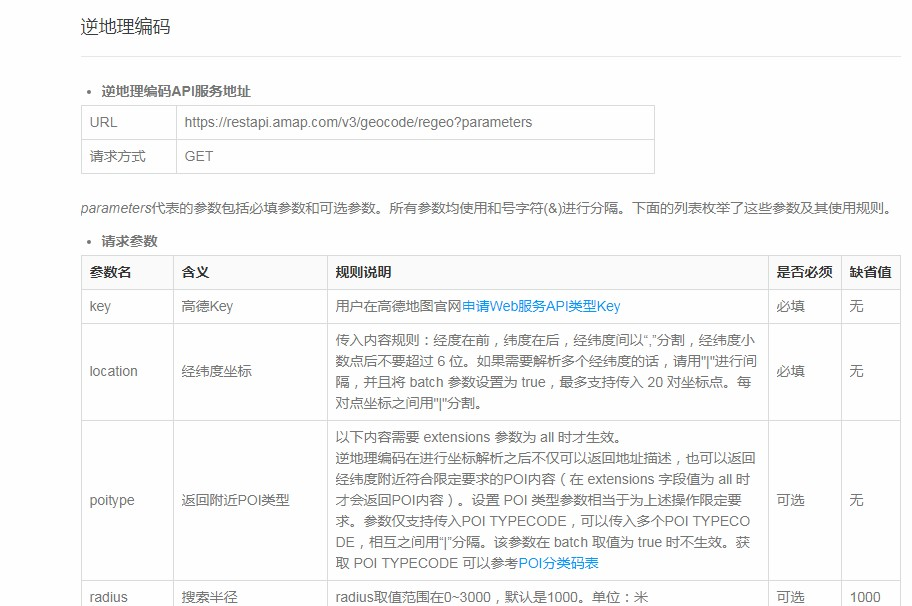
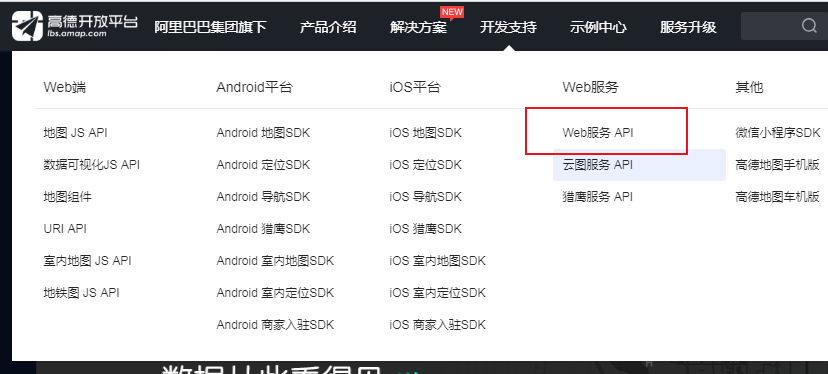
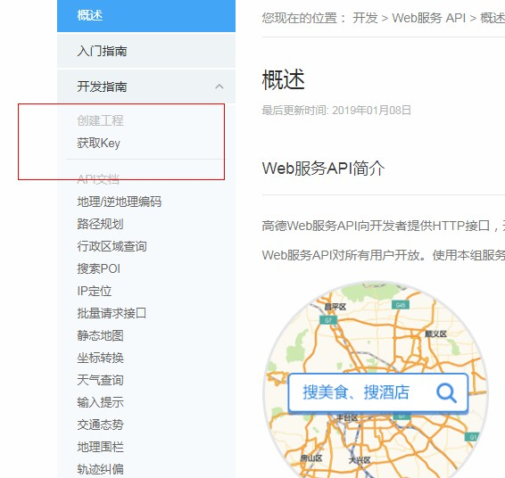
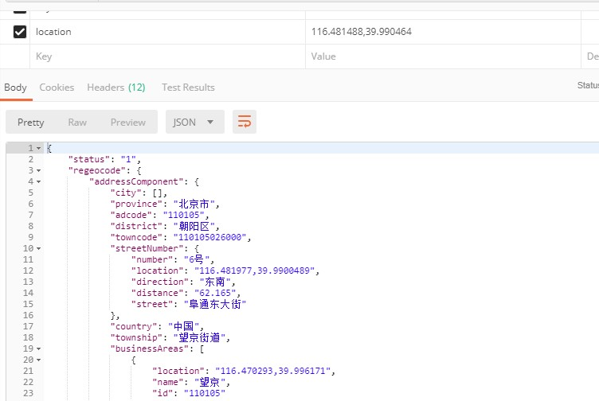
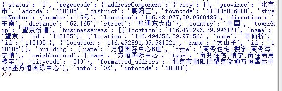

原文出处:本文由博客园博主霸道流氓提供。
原文连接:https://www.cnblogs.com/badaoliumangqizhi/p/11526896.html
原文连接:https://www.cnblogs.com/badaoliumangqizhi/p/11526896.html
场景
高德API提供给开发者们一些常用功能的接口，其中有一种叫地理/逆地理编码能实现
地名查询经纬度和经纬度查地名。

实现
高德API平台：
注册并登陆
找到Web服务

然后点击获取key，按照指示获取自己的key。

按照其逆地理编码的API，只需要发送一个GET请求并带着指定参数即可。
这里我们先使用PostMan进行测试。
最简单的就是只有两个参数，一个是刚才申请的key，一个是经纬度。

接下来使用Python进行请求测试
新建python文件
import requests
import json
url = 'https://restapi.amap.com/v3/geocode/regeo?key=你自己的Key&location=116.481488,39.990464'
res = requests.get(url)
json_data = json.loads(res.text)
print(json_data);
运行效果

当然，其他更复杂的需求就可以自己去开发了，以及其他的API功能，随用随学。